Count On Cabbage
For a tasty, productive, easy-to-grow crop, try cabbage!
By Roger Doiron
April/May 2009
Home cabbage cultivation isn’t what it used to be. One popular national catalog this year features 31 varieties of tomatoes, 19 peppers and a whopping two types of cabbage. But don’t fret! Many varieties of cabbage are still available from other sources.
What cabbage lacks in sex appeal and trendiness, it more than makes up for in dependability and productivity, two qualities that position it for a rebound in tough economic times. You may or may not get that temperamental crop of Brandywine tomatoes or heat-loving jalapeños, but with a little work and care, you can always count on cabbage. And people have done just that throughout the ages.
In ancient times, cabbage was king. The Roman soldier and statesman Cato the Elder may have been its most vocal and passionate advocate. Cato touted cabbage as a pre-emptive hangover cure, urging his compatriots to eat large quantities of it raw with vinegar as an appetizer to counter the effects of heavy eating and drinking. Its medicinal qualities were so powerful, Cato claimed, that they transformed habitual cabbage eaters’ urine into a salve that could be applied to sores and used for bathing sickly newborns. One can only imagine if Cato were alive today and writing seed catalog descriptions!
Cabbage’s greatest virtue throughout the ages, though, has been as a reliable source of sustenance and vitamins during the cold months of the year. From ancient times to the present, east to west and north to south, cabbage has been a staple for farmers, peasants and homesteaders. It withstands the last frosts of spring, the first frosts of fall, and stores well in a cold cellar. It can be shredded and eaten raw in the form of coleslaw, cooked in soups and stews, or pickled into sauerkraut or kimchi, sauerkraut’s spicy Asian equivalent.
You can try many types of cabbage. The most popular types in the United States are the smooth-leaved green and red varieties that form round, compact heads. Savoy varieties - smooth cabbage’s wrinkled, crinkled cousins - have been gaining popularity as eaters become more adventuresome in both their tastes and textures. For those people who really want to “think outside the ball,” there are curious cone-shaped types and the upright Chinese and Napa varieties, which are in fact more closely related to turnips.
Simple to Grow
Cabbage plants can be started easily from seed, either indoors in flats for spring transplanting or directly into the soil for late and storage varieties. The advantage to growing from seed is you have a much wider selection of varieties than the seedlings you’re likely to find at a local greenhouse or farmers market.
I grow cabbage for its many edible uses and because it’s simple to grow. The biggest trick is knowing when to grow it. In most parts of the United States, cabbage can be grown in either spring or autumn. I prefer mine as a fall and storage crop because I crave other greens in the spring. In the South and Southwest, cabbage is a winter crop. The reason for these regional differences is that cabbage heads form best in cool temperatures. Check the new regional What to Plant Now pages for advice specific to your region.
After you know what types you want to grow and when you want to grow them, you’ll want to turn your attention to providing the optimal conditions for your plants. Cabbage can be grown in 1 square foot of space, but I plant mine 18 inches apart. Like one of Cato’s soldiers at a Roman orgy, cabbage is a heavy feeder and drinker, and it’s best to give it plenty of space. The best way to satisfy its nutrient and moisture needs is to plant it in soil enriched with organic compost and topped with a layer of straw mulch for weed control. Cabbage plants send out shallow roots that can be easily damaged through cultivation close to the plant’s stem.
Choose a spot in full sun where cabbage family members (kale, broccoli, collards and cauliflower) were not grown the year before. If your garden is big enough to use a three-year rotation, that’s even better, as some cabbage diseases can persist in the soil for more than a year.
If they’re in the right place, cabbage plants don’t require much pampering aside from steady watering until head formation. Take care to water regularly: Cabbage heads are prone to split if they receive too much water after a dry spell. If they split, they won’t keep as well in storage.
Beat the Bugs; Keep the Crop
Some insect pests are likely to show up. Cabbageworms have huge appetites and can do the most damage. If your plants’ leaves have large, ragged holes in them, it means the cabbage loopers, as they’re also called, have arrived.
My preferred cabbageworm control method is called Maxim and Sebastian (my two youngest sons, ages 9 and 11), who have trained their eyes to spot and remove loopers when they’re still small, which is no small feat. Cabbageworms are, along with tomato hornworms, some of the garden’s most impressive camouflage experts with their soft, green bodies disappearing into the leafy green backgrounds, often hanging out on the undersides of leaves. If you are growing less than a dozen plants, handpicking these pests works fine. For larger crops, you will want to consider investing in an organic, Bt-based insecticide. Bt, short for bacillus thuringiensis, is a natural bacterium that gives loopers a terminal tummy ache no amount of cabbage can cure. Or try the tip Mother Earth News is inviting readers to test this summer: Spread coffee grounds and crushed eggshells around the plants to repel slugs and the moths that lay the eggs that turn into cabbage-munching worms.
If you steer clear of these dangers, you can begin harvesting cabbage anytime from 60 to 105 days after sowing, depending on the variety you plant. Cabbage plants can be pulled out of the ground roots and all. For early season cabbage, you can cut the plant just below the head and toss the stem and roots onto the compost pile. For late-season varieties, there are two main ways of storing your crop: with their roots or without. In both cases, they’ll store best if kept in a cool (32 degrees Fahrenheit is ideal) and humid location. Remove any loose, damaged or diseased leaves before storing. Some people keep their cabbage roots covered with wet sand during storage - the plants grow a second crop of small cabbage leaves after the heads have been removed.
Last year, my family and I grew about 40 pounds of cabbage in our modest suburban garden. About half of the harvest went into our sauerkraut crock. Pickling is a great way to extend the cabbage harvest into the cool months while keeping nearly all of its vitamin C intact - if you eat it raw, as my wife and I like to do. (Making sauerkraut is simple. Check out Got Cabbage? Make Sauerkraut!)
On chilly days, however, my body craves something warmer and more substantial than raw foods. My latest culinary discovery has been stuffed cabbage, a hearty peasant preparation. For as long as people have been growing cabbage, they have been cooking it stuffed with various combinations of meats, herbs, spices, vegetables and grains. To try out stuffed cabbage, remove the core of a medium head of cabbage and place it in boiling water. As the outer leaves loosen, remove them one by one with tongs and place them on a dish towel to dry. Prepare your favorite meatloaf or stuffing mix and place a large scoop of it in the middle of each cabbage leaf. Wrap and tuck the edges of the leaves around the mix. Arrange the stuffed leaves in a covered baking dish or Dutch oven. Top them with chopped onions, tomatoes and the remaining small cabbage leaves, and bake for 45 to 60 minutes at 350 degrees. While I don’t subscribe to all of Cato’s theories about cabbage’s medicinal virtues, I can’t think of a better cure for cold-weather blues.
Recommended Cabbage Varieties
‘Kaboko’ (60 days): This compact Napa variety is slow to bolt, making it an excellent choice for spring planting. Creamy white interior is tasty cooked or raw.
‘Early Jersey Wakefield’ (63 days): Popular dark-green heirloom variety introduced in the 1840s. Compact, conical heads average 2 pounds and are sweet and flavorful.
‘Ruby Perfection’ (85 days): Fancy midseason type produces solid deep purple-red spherical heads averaging 4 to 6 pounds, occasionally reaching 8 pounds. A great red storage cabbage.
‘Kaitlin’ (94 days): A high-quality kraut cabbage with lots of vitamin C. It’s a large, late-season cabbage that produces a good yield of high dry-matter cabbage for kraut.
‘Deadon’ (105 days): Beautiful savoy cabbage with reddish highlights and light green interior leaves. Plants produce a firm, 3- to 5-pound head with a smooth, sweet flavor.
For seed sources, use our Seed and Plant Finder.
Roger Doiron is working to encourage the Obama administration to plant an organic garden on the White House lawn. He hopes the presidential garden will feature at least two types of cabbage.
|
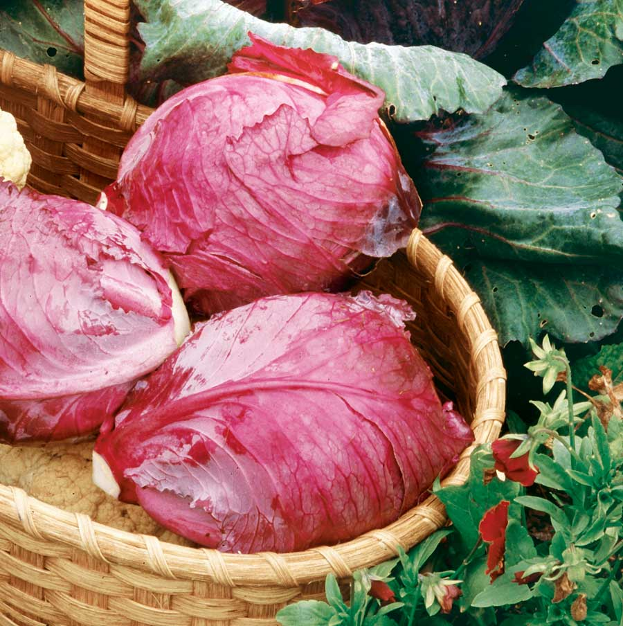 DAVID CAVAGNARO Cabbage is dependable, productive and beautiful! |
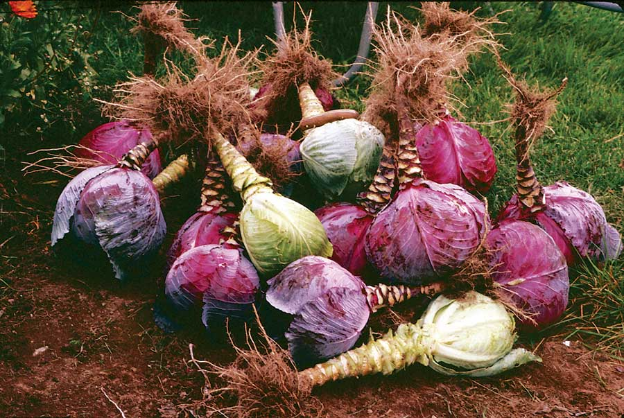 LYNN KARLIN Cabbage with their outer leaves stripped for winter storage. |
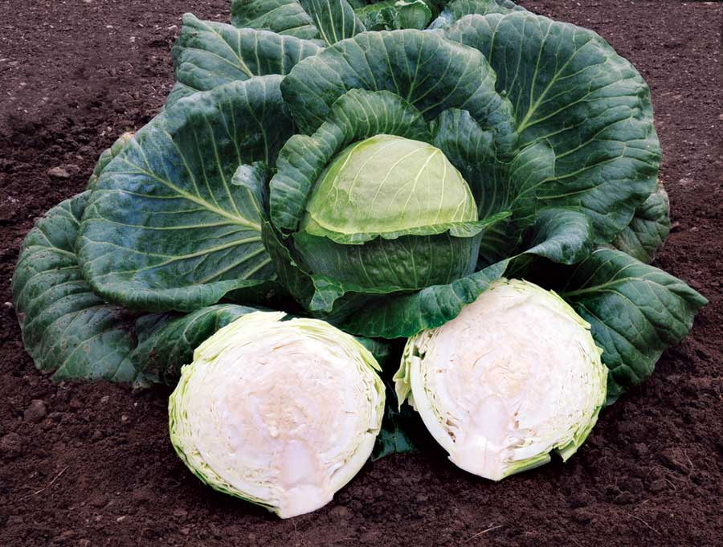 JOHNNY'S SELECTED SEEDS ‘Kaitlin’ is a late-season variety that will store until December or January. |
 JOHNNY'S SELECTED SEEDS ‘Bilko,’ a Napa cabbage. |
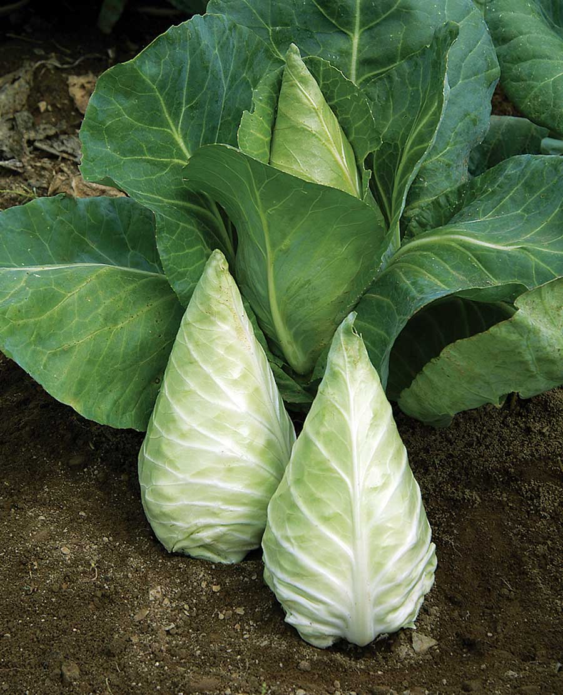 JOHNNY'S SELECTED SEEDS ‘Caraflex,’ a pointed, mini variety. |
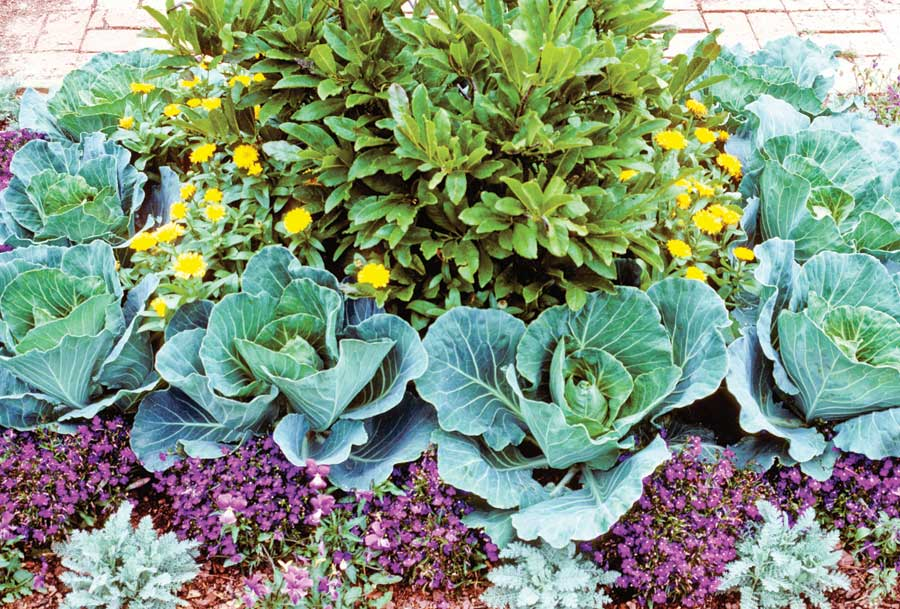 JERRY PAVIA Cabbage varieties range in color from nearly white to dark purple (plus all shades of green), and can add visual interest to a flower bed or edible landscaping. |
|
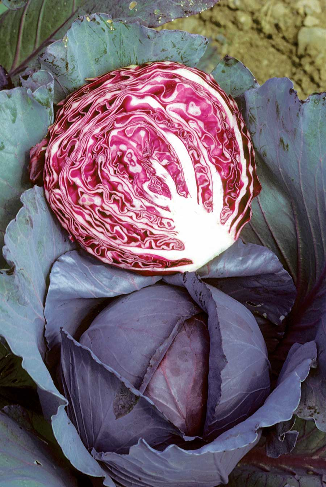 DWIGHT KUHN ‘Regal Red’ variety. |
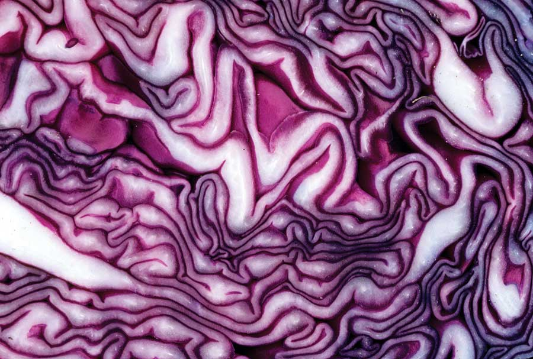 DWIGHT KUHN Powerful antioxidants (anthocyanins) give purple cabbage its color. |
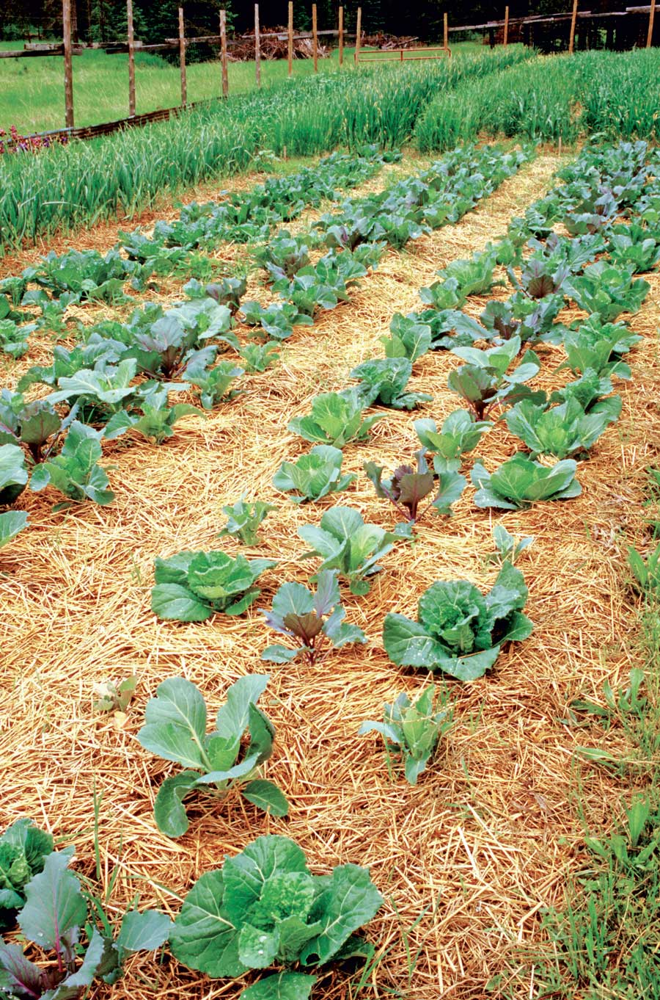 JERRY PAVIA Cabbage plants need little attention, but do require a steady supply of water. |
|
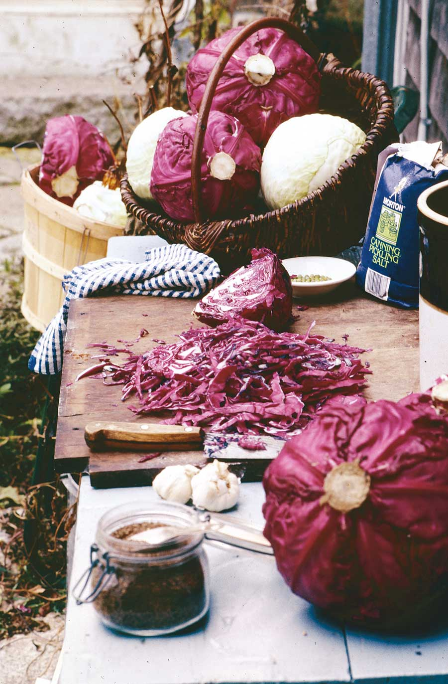 LYNN KARLIN Sauerkraut is easy to make. |
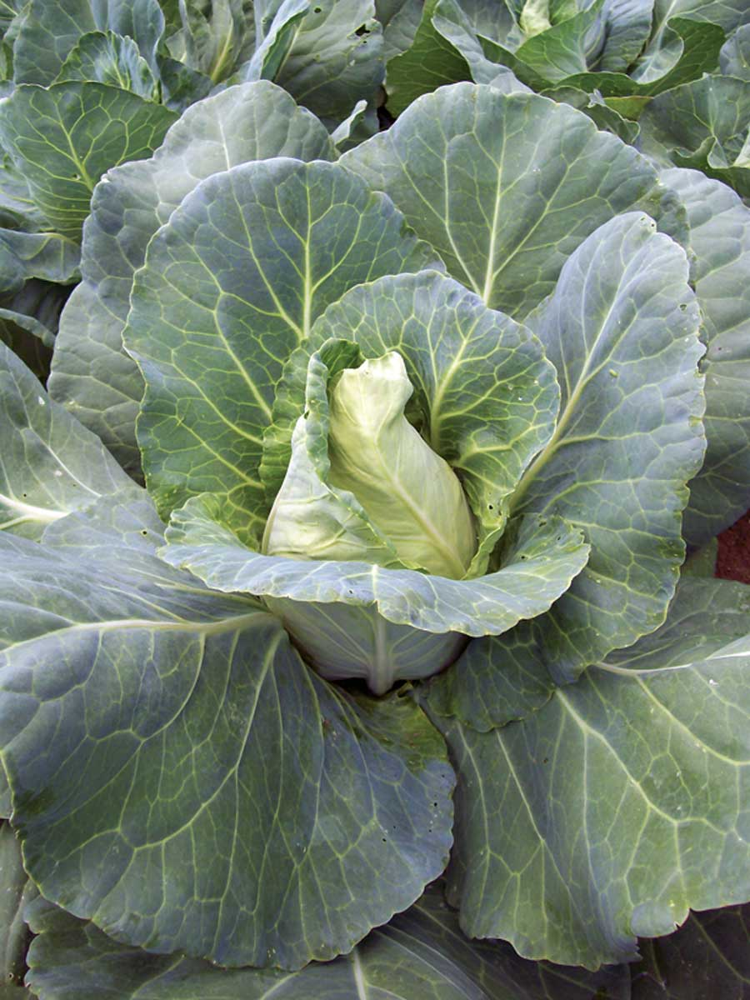 SOUTHERN EXPOSURE SEED EXCHANGE 'Early Jersey Wakefield' |
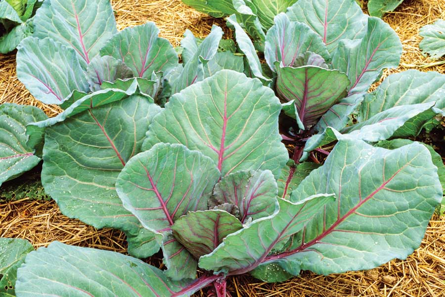 JERRY PAVIA 'Ruby Perfection' |
|
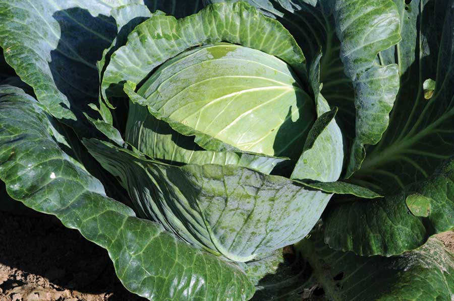 JOHNNY'S SELECTED SEEDS 'Kaitlin' |
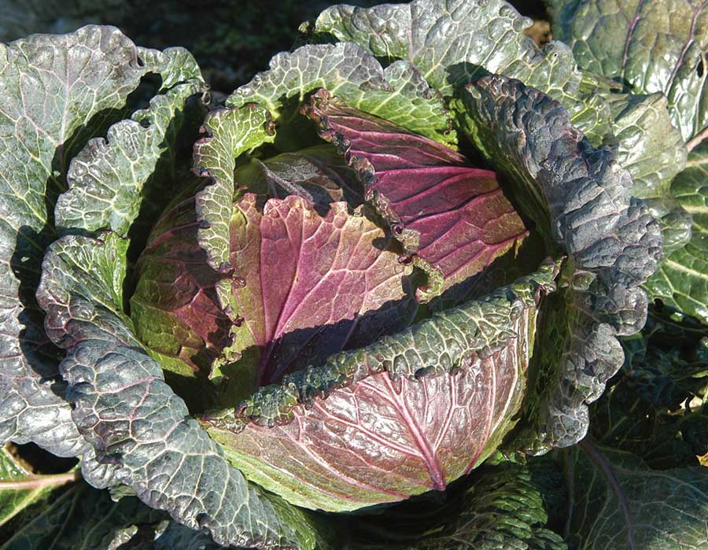 JOHNNY'S SELECTED SEEDS 'Deadon' |
|